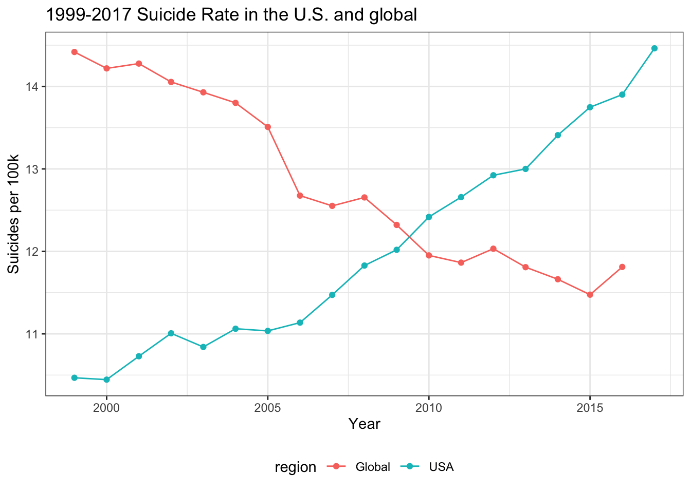
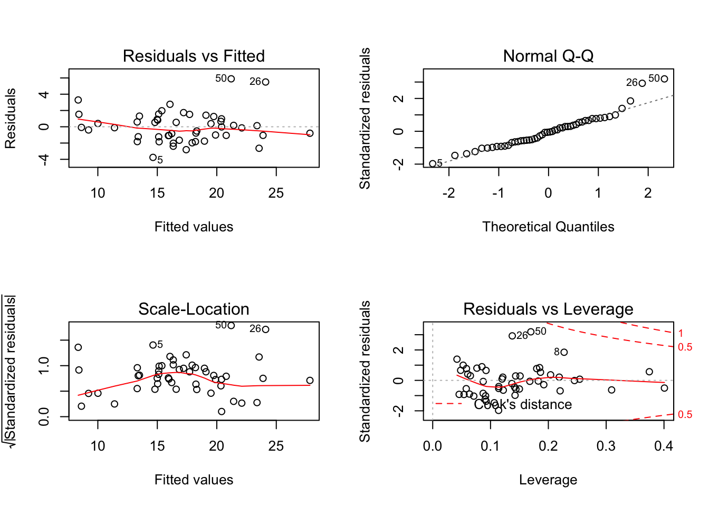

Final report
Motivation
Some facts about suicide
About 800,000 people died by suicide every year, which accounts for 1.4% of all deaths worldwide.
The annual U.S. suicide rate increased by 10% between 2014 and 2017 according to the CDC’s National Center for Health Statistics(NCHS).
In 2015, suicide has become the second leading cause of death among 15-34 age group and the third leading cause of death among 10-14 age group in the U.S.
It is reported that in 2016 suicide was the 10th leading cause of death in the U.S., imposing a cost of $69 billion annually.
On the one hand, almost all the risk factors for suicide are preventable. Usually, people are not aware of the risk factors of suicide and situate themselves in the dangerous environment. We believe that a better understanding of potential risk factors is essential for the prevention of suicide.
usa_suicide =
read_xlsx("./data/suicide_age_gender.xlsx") %>%
janitor::clean_names() %>%
filter(is.na(ten_year_age_groups)) %>%
drop_na(gender) %>%
select(year, state, gender, deaths, population) %>%
group_by(year) %>%
summarize(
deaths = sum(deaths),
population = sum(population)
) %>%
mutate(
suicide_rate = deaths * 100000/population
) %>%
select(year,suicide_rate)
global_suicide =
read_csv("./data/master.csv") %>%
janitor::clean_names() %>%
filter(year >= 1999) %>%
group_by(year) %>%
summarize(
deaths = sum(suicides_no),
population = sum(population)
) %>%
mutate(
suicide_global = deaths*100000/population
) %>%
select(year, suicide_global)
suicide_rate =
left_join(usa_suicide, global_suicide, by = "year") %>%
rename( "USA" = "suicide_rate", "Global" = "suicide_global") %>%
pivot_longer(
USA:Global,
names_to = "region",
values_to = "suicide_rate"
)
suicide_rate %>%
ggplot(aes(x = year, y = suicide_rate, color = region)) +
geom_point() + geom_line() +
labs(
title = "1999-2017 Suicide Rate in the U.S. and global",
x = "Year",
y = "Suicides per 100k"
)
On the other hand, the suicide rate in the U.S. increases overtime while it decreases globally. Therefore, we want to focus on the U.S. to explore the risk factors and promote effective preventive measures.
Goal of our project
Visualizing the general situation of suicide rate worldwide
Exploring risk factors for suicide in U.S.
Visualizing the distribution of risk factors and suicide in the U.S.
Analyzing correlations of these risk factors with suicide in U.S.
Initial Question
We aim to investigate the risk factors for suicide and suicide rate in the U.S.. We want to visualize the association and data innovatively and interactively. As stated above, our questions are as follows:
What are potential risk factors for suicide? How could we visualize the association between these factors and suicide rate?
How could we use shiny to visualize the distribution of risk factors and suicide rate in the USA?
Could the model be generalized to other regions? How can we predict suicide rate using the constructed model?
Tidy the Data
Data Import
Worldwide Suicide Data
- World suicide data is from here, a Kaggle project dataset, including variables such as countries, year, sex, age, suicide number, population and GDP, which aims to describe the general suicide rates among different countries, time, gender and age. The dataset is a complied dataset, coming from United Nations Development Program, World Banlk, Suicide in the 21st Century and World Health Organization
USA Suicide Data and the potential risk factors data
The suicide rates of each state from 1999 to 2017 is from Domectis suicide distribution dataset from CDC. This dataset also includes gender and age composition in each state as well as suicide rates among groups.
The per capital GDP of each state in 2007 is from Wiki, presenting a list of U.S states sorted by their gross domestic product (GDP) per capita from 2011-2018.
The average yearly precipitation of each state is from NETSTATE.COM, presenting a list of U.S. states sorted by their average yearly precipitation.
The average temperature of each state is from USA.COM, presenting a list of U.S. areas sorted by their average temperature.
The marijuana data of each state is from samhsa.gov, showing the percentage of U.S. adults that have used cannabis within the past year from 2016 to 2017, by state.
The alcohol consumption data of each state is from NIH; NIAAA, showing apparent per capita alcohol consumption: national, state, and regional trends in 1977-2017. We only select 2007 data.
The education attainment data of each state is from SSTi, containing information on share of population with advanced degree, bachelor’s degree, associate’s or some college, and high school or less.
The education attainment data of each state is from SSTi, containing information on share of population with advanced degree, bachelors’ degree, associate’s or some college, and high school or less.
The gun data of each state is from ThoughtCo containing information on number of guns per capita and total guns registered of each state in 2017.
All the data can be found here.
Data Cleaning
Worldwide Suicide Data
## global map
world <- read_csv("./data/master.csv")
world_clean <-
world %>%
rename( "rate_standardized" = "suicides/100k pop") %>%
mutate(suicides = population * rate_standardized) %>%
group_by(country,year) %>%
summarise(rate = sum(suicides)/sum(population))
world_clean <-
world_clean %>%
mutate(
'country_iso3c' = countrycode(country,'country.name', 'iso3c')
)
# get Min and Max values of suicide rate
vmax <- world_clean %>% pull(rate) %>% max(na.rm=T)
vmin <- world_clean %>% pull(rate) %>% min(na.rm=T)
## Global total trend (by year)
data_year=global %>%
group_by(year) %>%
summarize(population = sum(population),
suicides = sum(suicides_no),
suicides_per100k = (suicides / population) * 100000)
data_year2=arrange(data_year, desc(suicides_per100k))[1,]
data_year2$suicides_per100k<-round(data_year2$suicides_per100k,2)
## Global gender trend
data_gender=global %>%
group_by(sex,year) %>%
summarize(population = sum(population),
suicides = sum(suicides_no),
suicides_per100k = (suicides / population) * 100000)
## Different age group trend(by year) animation separeted line
data_age=global %>%
mutate(
age=fct_relevel(age,"5-14 years","15-24 years","25-34 years","35-54 years","55-74 years","75+ years")
)%>%
group_by(year, age) %>%
summarize(suicide_per100k = (sum(as.numeric(suicides_no)) / sum(as.numeric(population))) * 100000)
## average suicide rate ranking during 1987-2016 in different continet
global_rank=global %>%
filter(year>2010) %>%
group_by(country) %>%
summarize(suicide_per100k = (sum(as.numeric(suicides_no)) / sum(as.numeric(population))) * 100000) %>%
arrange(desc(suicide_per100k)) %>%
ungroup() %>%
mutate(
country=as.factor(country),
country=fct_reorder(country,desc(suicide_per100k))
) %>%
head(40) %>%
mutate(highlight_flag = ifelse(country == 'United States', T, F))We directly downloaded the csv file of world suicide data here. Then we calculated suicide rate per 100k using suicide number and total population. Next, for different purposes, we group_by different variables such as year, country and gender to get the rates in different groups.
US_2017 Data
## suicide_rate_df
suicide_rate_df =
read_excel("./data/suicide_age_gender.xlsx") %>%
janitor::clean_names() %>%
filter(year == 2017) %>%
filter(is.na(ten_year_age_groups)) %>%
drop_na(gender) %>%
select(state,gender, deaths, population) %>%
group_by(state) %>%
summarize(
suicide_rate_per100000 = sum(deaths)*100000/sum(population)
)
## gender_rate_df
gender_rate_df =
read_excel("./data/suicide_age_gender.xlsx") %>%
janitor::clean_names() %>%
filter(year == 2017) %>%
filter(is.na(ten_year_age_groups)) %>%
drop_na(gender) %>%
select(state,gender,population) %>%
pivot_wider(
names_from = "gender",
values_from = "population"
) %>%
mutate(
female_ratio = Female/(Female+Male),
male_ratio = Male/(Female+Male)
) %>%
select(state, female_ratio, male_ratio)
## gender_suiciderate_df
gender_suiciderate_df =
read_excel("./data/suicide_age_gender.xlsx") %>%
janitor::clean_names() %>%
filter(year == 2017) %>%
filter(is.na(ten_year_age_groups)) %>%
drop_na(gender) %>%
select(state,gender,deaths,population) %>%
mutate(
suicide_rate_per100000 = deaths*100000/population
) %>%
select(state, gender, suicide_rate_per100000) %>%
pivot_wider(
names_from = gender,
values_from = suicide_rate_per100000
) %>%
mutate(F_suicide_rate_per100000 = Female, M_suicide_rate_per100000 = Male) %>%
select(-Female, -Male)
## age
age_df =
read_excel("./data/suicide_age_gender.xlsx") %>%
janitor::clean_names() %>%
filter(year == 2017) %>%
drop_na(ten_year_age_groups) %>%
select(state,gender,ten_year_age_groups, population) %>%
pivot_wider(
names_from = "gender",
values_from = "population"
) %>%
mutate(
Female = replace(Female, is.na(Female), 0),
Male = replace(Male, is.na(Male), 0),
total = Female + Male
) %>%
select(-Female, -Male) %>%
pivot_wider(
names_from = "ten_year_age_groups",
values_from = "total"
) %>%
rename("Y15_24" = "15-24 years", "Y25_34" = "25-34 years","Y35_44" = "35-44 years","Y45_54" = "45-54 years","Y55_64" = "55-64 years","Y65_74" = "65-74 years","Y5_14" = "5-14 years", "Y75_84" = "75-84 years","Y85_larger" = "85+ years") %>%
mutate(
Y5_14 = replace(Y5_14, is.na(Y5_14), 0),
Y15_24 = replace(Y15_24, is.na(Y15_24), 0),
Y25_34 = replace(Y25_34, is.na(Y25_34), 0),
Y35_44 = replace(Y35_44, is.na(Y35_44), 0),
Y45_54 = replace(Y45_54, is.na(Y45_54), 0),
Y55_64 = replace(Y55_64, is.na(Y55_64), 0),
Y65_74 = replace(Y65_74, is.na(Y65_74), 0),
Y75_84 = replace(Y75_84, is.na(Y75_84), 0),
Y85_larger = replace(Y85_larger, is.na(Y85_larger), 0),
total = Y5_14 + Y15_24 + Y25_34+Y35_44+Y45_54+Y55_64+Y65_74 +Y75_84+Y85_larger,
R5_14 = Y5_14/total,
R15_24= Y15_24/total,
R25_34=Y25_34/total,
R35_44=Y35_44/total,
R45_54=Y45_54/total,
R55_64=Y55_64/total,
R65_74=Y65_74/total,
R75_84=Y75_84/total,
R85_larger = Y85_larger/total
) %>%
select(state, contains("R"))
## read and clean alcohol
alcohol = read_excel("./data/alcohol2017.xlsx", sheet = 2, skip = 3) %>%
janitor::clean_names() %>%
remove_missing() %>%
mutate(state = alcohol_consumption_per_capita_from_all_beverages_in_the_u_s_in_2017_by_state_in_gallons_of_ethanol,
alcohol_consumption_per_capita_gallons = x2) %>%
select(state, alcohol_consumption_per_capita_gallons)
## read and clean marijuana
marijuana = read_excel("./data/marijuana2017.xlsx", sheet = 2, skip = 3) %>%
janitor::clean_names() %>%
remove_missing() %>%
mutate(state = percentage_of_u_s_adults_that_have_used_cannabis_within_the_past_year_from_2016_to_2017_by_state,
marijuana_percentage = x2*0.01) %>%
select(state, marijuana_percentage)
left_join(alcohol, marijuana)
## education
edu =
cbind(readxl::read_excel("./xj/Educational Attainment.xlsx",range = "A2:A54"),
readxl::read_excel("./xj/Educational Attainment.xlsx",range = "N2:S54")) %>%
janitor::clean_names() %>%
mutate(year = "2017") %>%
select(state, year, everything(),-less_than_bachelors,-at_least_bachelors)
## gun
url = "https://www.thoughtco.com/gun-owners-percentage-of-state-populations-3325153"
gun_xml = read_html(url)
gun_xml %>%
html_nodes(css = "table")
gun=
(gun_xml %>% html_nodes(css = "table")) %>%
.[[1]] %>%
html_table(header = T) %>%
slice(-1) %>%
as_tibble() %>%
janitor::clean_names() %>%
mutate(year = "2017") %>%
select(state,year,everything(),-rank) %>%
select(-year)
## precipitation
precipitation = read_html("https://www.netstate.com/states/tables/state_precipitation.htm") %>%
html_nodes(css = "table") %>%
.[[1]] %>%
html_table(fill = TRUE) %>%
select(X2, X3) %>%
slice(-1:-4) %>%
slice(-(n() - 3):-n()) %>%
rename(state = X2, precipitation = X3) %>%
separate(precipitation, into = c("precipitation_inches", "precipitation_cm"), sep = " inches [(]") %>%
select(state, precipitation_inches) %>%
mutate(precipitation_inches = as.numeric(precipitation_inches))
## temperature
temp_data = read_html("http://www.usa.com/rank/us--average-temperature--metro-area-rank.htm?yr=9000&dis=&wist=&plow=&phigh=") %>%
html_nodes(css = "table") %>%
.[[2]] %>%
html_table() %>%
slice(-1) %>%
separate(X2, into = c("temperature", "unit"), sep = "°") %>%
separate(X3, into = c("area_state", "population"), sep = " / ") %>%
separate(area_state, into = c("area", "state_ab"), sep = ", ") %>%
select(temperature, state_ab) %>%
mutate(temperature = as.numeric(temperature)) %>%
group_by(state_ab) %>%
summarize(mean_temperature_F = mean(temperature)) %>%
filter(nchar(state_ab) == 2)
state_ab_data = read_excel(path = "./data/state_ab.xlsx")
temperature =
left_join(state_ab_data, temp_data, by = "state_ab") %>%
select(state, mean_temperature_F) %>%
mutate(state = str_replace(state, "\\s", ""))
## GDP
gdp = read.csv("./data/gdp_2017.csv") %>%
mutate(gdp = X2017) %>%
select(-X2017)
## joint
us_2017 =
left_join(suicide_rate_df, gender_rate_df) %>%
left_join(gender_suiciderate_df) %>%
left_join(age_df) %>%
left_join(alcohol) %>%
left_join(marijuana) %>%
left_join(edu) %>%
left_join(gdp) %>%
left_join(gun) %>%
left_join(precipitation) %>%
left_join(temperature) %>%
select(-year) %>%
select(-Y85_larger)
names(us_2017) = c("State",
"Suicide rate", "Female proportion", "Male proportion",
"Female Suicide rate", "Male Suicide rate",
"Age 5-14","Age 15-24", "Age 25-34", "Age 35-44", "Age 45-54", "Age 55-64", "Age 65-74", "Age 75-84", "Age >85",
"Alcohol consumption", "Marijuana usage",
"Advanced degree", "Bachelors degree", "College", "Below college degree",
"GDP", "Guns number per capita(average)", "Guns number registered(average)", "Precipitation", "Temperature"
)
# write_csv(us_2017,"./data/us_2017.csv")After we got USA Suicide Data and the potential risk factors data, we did some data cleaning process. We collected data by downloading directly or extracting tables using read_html function from the website. Then, we selected states and risk factor information in 2017 and joined every data frame together to get the final merged dataset.
Final Combined Dataset of USA suicide and risk factors
After collecting data from different sources, we constructed a merged dataset collecting multiple potential risk factors for suicide rate in different states in the U.S., here are the descriptions:
Suicide rate (2017): The number of suicide deaths cases per 100k population.
Female proportion (2017): The proportion of female.
Male proportion (2017): The proportion of male.
Female Suicide rate (2017): The number of female suicide deaths cases per 100k females.
Male Suicide rate (2017): The number of male suicide deaths cases per 100k males.
Age 5-14 (2017): The proportion of people aged between 5-14.
Age 15-24 (2017): The proportion of people aged between 15-24.
Age 25-34 (2017): The proportion of people aged between 25-34.
Age 35-44 (2017): The proportion of people aged between 35-44.
Age 45-54 (2017): The proportion of people aged between 45-54.
Age 55-64 (2017): The proportion of people aged between 55-64.
Age 65-74 (2017): The proportion of people aged between 65-74.
Age 75-84 (2017): The proportion of people aged between 75-84.
Age >85 (2017): The proportion of people aged over 85.
Alcohol consumption (2017): Alcohol consumption per capita in gallons
Marijuana usage (2017): The proportion of people using marijuana.
Advanced degree (2017): The proportion of people with advanced degrees.
Bachelors degree(2017): The proportion of people with Bachelor’s degrees.
College degree (2017): The proportion of people with College degrees.
Below college degree (2017): The proportion of people with below college degrees.
GDP (2017): Gross Domestic Product per capita.
Guns number per capita (2017): Averaged guns number per capita.
Guns number registered (2017): Averaged guns number registered
Precipitation: Averaged Precipitation in inches.
Temperature: Averaged Temperature in F.
Another dataset we used is Domectis suicide distribution dataset from 1999 to 2017. In this dataset, we have information about number of suicide cases in different years, states, gender and age group and the population in each groups. Using this dataset, we can analyze how suicide cases change in each state in time and how suicide cases distributed in different gender and age groups.
Sub-analyses
World-level insight
Visualizing the world data helps us to understand the general trend of suicide rate among different age, gender and capture the difference between domestic and global suicide rate situation.
Firstly, we drew an animated world map Gif to show the suicide rate change of each country from 1986-2016.
Secondly, the line plot was made to show the annual global suicide rate change. We can tell that before 1995, a dramatic increase happened and after 1995, a steady drop followed.
Thirdly, the global suicide rate change by gender was presented. Generally, the rate in male was much higher than the rate in female.
What’s more, different trends in different age groups showed that 75+ age group occupied the highest position all the time. But all age groups were experiencing a drop from 2000 to 2016.
Finally, the average suicide ranking plot(2010-2016) told us how did America’s suicide rate compare with other countries. In top 40, USA ranked 23rd, indicating a worrying situation.
The detailed analysis can be found here.
US-level insight
To show how the suicide cases distributed in different states, we made a Crude Suicide Rate map allowing users to toggle between different years (1999-2017) and choose gender, demonstrating the changes in the suicide rate over time and visualize regional differences across the U.S. The map demonstrates that there are significant changes over time and gender.
We made a line plot to show the change of total suicide rate by year in US. We can see a stable increase by year and the fact that there are many more cases of suicide in male than in female.
abb = read_excel("./data/state_ab.xlsx") %>% mutate(state = str_replace(state, "\\s", ""))
suicide = read_excel("./data/suicide_age_gender.xlsx") %>% janitor::clean_names() %>%
filter(state != "District of Columbia") %>%
filter(is.na(ten_year_age_groups)) %>%
drop_na(gender) %>%
left_join(abb) %>% select(year, state_ab, state, gender, deaths, population) %>%
mutate(rate = (deaths/population)*100000) %>%
select(year, state_ab, gender, rate)
suicide_all = suicide %>% group_by(year,gender) %>% summarise(rate = sum(rate))
line =
suicide_all %>%
ggplot(aes(x = year, y = rate)) + geom_point(aes(color = gender)) + geom_line(aes(color = gender)) + theme_bw() +
labs(
title = "Suicide rate change over time in US"
)
ggplotly(line)We also made boxplots to show the distributions of suicides cases and population composition in states.
df = read_csv("./data/us_2017.csv") %>% janitor::clean_names() %>% filter(state != "District of Columbia") %>%
pivot_longer(
2:26,
names_to = "variables",
values_to = "data"
)
# suicide rate
df1 = read_csv("./data/us_2017.csv") %>% janitor::clean_names() %>% filter(state != "District of Columbia" ) %>% select(state,suicide_rate, male_suicide_rate, female_suicide_rate) %>%
pivot_longer(
-state,
names_to = "variables",
values_to = "data"
)
df1 %>%
plot_ly(y = ~data, color = ~variables, type = "box",
colors = "Set2") # population proportion
df2 = read_csv("./data/us_2017.csv") %>% janitor::clean_names() %>% filter(state != "District of Columbia" ) %>%
select(state, male_proportion, female_proportion,
age_5_14,age_15_24,age_25_34,age_35_44,age_45_54,age_55_64,age_65_74,age_75_84,age_85,advanced_degree,bachelors_degree,college,below_college_degree) %>%
pivot_longer(
-state,
names_to = "variables",
values_to = "data"
) %>%
mutate(variables = factor(variables, levels = c("male_proportion", "female_proportion",
"age_5_14","age_15_24","age_25_34","age_35_44","age_45_54","age_55_64","age_65_74","age_75_84","age_85","advanced_degree","bachelors_degree","college","below_college_degree"))
) %>%
mutate(
types = case_when(
variables %in% c("male_proportion" , "female_proportion") ~ "Gender",
variables %in% c("age_5_14","age_15_24","age_25_34","age_35_44","age_45_54","age_55_64","age_65_74","age_75_84","age_85") ~ "Age",
variables %in% c("advanced_degree","bachelors_degree","college","below_college_degree") ~ "Education"))
boxplot =
df2 %>%
ggplot(aes(x = variables, y = data)) + geom_boxplot(aes(color = types)) +
theme_bw() +
theme(axis.text.x = element_text(angle = 45, hjust = 1)) +
labs(
x = "population compostion",
y = "proportion",
title = "population compostion"
)
ggplotly(boxplot)To show the distribution of the risk factors, we constructed the U.S. map in shiny app allowing users to choose the types of variables, visualizing regional differences across the U.S. and a bar plot showing the intuitive number in different states. Users can choose TOP N states they want to explore in both plots.
Regression Analysis
We are interested in whether there is a linear association between suicide rate and some risk factors. We chose suicide as the main outcome, gun, alcohol, temperature, precipitation, marijuana, education, GDP and gender as candidate covariates, each with 50 observations.
One value of gun in Wyoming and one value of temperature in Rhode Island were missing. We replaced them with the mean value of the other 49 observations.
After tidying the merged dataset, we obtained the regression dataset. The description of the dataset is shown below:
| Variables | Description |
|---|---|
| state | State |
| suicide | The number of suicide deaths per 100k population |
| gun | Averaged guns number per capita |
| alcohol | Alcohol consumption per capita (gallons of ethanol) |
| temperature | Average temperature (F) |
| precipitation | Average precipitation (inches) |
| marijuana | The proportion of people using marijuana (%) |
| education | Educational attainment - bachelor’s degree or higher (%) |
| gdp | GDP per capita (dollars) |
| gender | Male (%) |
regression_data = read_csv("./data/us_2017.csv") %>%
janitor::clean_names() %>%
filter(state != "District of Columbia") %>%
mutate(
suicide = suicide_rate,
gun = guns_number_per_capita_average,
alcohol = alcohol_consumption,
marijuana = marijuana_usage * 100,
education = (advanced_degree + bachelors_degree) * 100,
gender = male_proportion * 100
) %>%
select(state, suicide, gun, alcohol, temperature, precipitation, marijuana, education, gdp, gender) %>%
# replace missing value with mean value
mutate(
gun = replace_na(gun, mean(gun, na.rm = TRUE)),
temperature = replace_na(temperature, mean(temperature, na.rm = TRUE)))Simple linear regression
First, we used scatter plot to see the relationship between suicide rate and each covariate. The scatter plots with linear regression line are shown below:
fit_gun = lm(suicide ~ gun, data = regression_data)
fit_alcohol = lm(suicide ~ alcohol, data = regression_data)
fit_education = lm(suicide ~ education, data = regression_data)
fit_gdp = lm(suicide ~ gdp, data = regression_data)
fit_gender = lm(suicide ~ gender, data = regression_data)
fit_marijuana = lm(suicide ~ marijuana, data = regression_data)
fit_precipitation = lm(suicide ~ precipitation, data = regression_data)
fit_temperature = lm(suicide ~ temperature, data = regression_data)
gun_ly =
regression_data %>%
plot_ly(
x = ~gun, y = ~suicide, type = "scatter", mode = "markers", color = I("palegreen4"), text = ~state, name = "gun") %>%
add_lines(x = ~gun, y = fitted(fit_gun), line = list(color = I("palegreen4"), width = 2), name = "lm-gun")
alcohol_ly =
regression_data %>%
plot_ly(
x = ~alcohol, y = ~suicide, type = "scatter", mode = "markers", color = I("indianred1"), text = ~state, name = "alcohol") %>%
add_lines(x = ~alcohol, y = fitted(fit_alcohol),line = list(color = I("indianred1"), width = 2), name = "lm-alcohol")
temp_ly =
regression_data %>%
plot_ly(
x = ~temperature, y = ~suicide, type = "scatter", mode = "markers", color = I("brown"), text = ~state, name = "temperature") %>%
add_lines(x = ~temperature, y = fitted(fit_temperature), line = list(color = I("brown"), width = 2), name = "lm-temperature")
precip_ly =
regression_data %>%
plot_ly(
x = ~precipitation, y = ~suicide, type = "scatter", mode = "markers", color = I("orange"), text = ~state, name = "precipitation") %>%
add_lines(x = ~precipitation, y = fitted(fit_precipitation), line = list(color = I("orange"), width = 2), name = "lm-precipitation")
mari_ly =
regression_data %>%
plot_ly(
x = ~marijuana, y = ~suicide, type = "scatter", mode = "markers",color = I("snow4"), text = ~state, name = "marijuana") %>%
add_lines(x = ~marijuana, y = fitted(fit_marijuana), line = list(color = I("snow4"), width = 2), name = "lm-marijuana")
edu_ly =
regression_data %>%
plot_ly(
x = ~education, y = ~suicide, type = "scatter", mode = "markers", color = I("plum"), text = ~state, name = "education") %>%
add_lines(x = ~education, y = fitted(fit_education), line = list(color = I("plum"), width = 2), name = "lm-education")
gdp_ly =
regression_data %>%
plot_ly(
x = ~gdp, y = ~suicide, type = "scatter", mode = "markers", color = I("royalblue1"), text = ~state, name = "gdp") %>%
add_lines(x = ~gdp, y = fitted(fit_gdp), line = list(color = I("royalblue1"), width = 2), name = "lm-gdp")
gender_ly =
regression_data %>%
plot_ly(
x = ~gender, y = ~suicide, type = "scatter", mode = "markers", color = I("purple1"), text = ~state, name = "gender") %>%
add_lines(x = ~gender, y = fitted(fit_gender), line = list(color = I("purple1"), width = 2), name = "lm-gender")
subplot(gun_ly, alcohol_ly, temp_ly, precip_ly, mari_ly, edu_ly, gdp_ly, gender_ly, nrows = 4, shareX = FALSE, shareY = TRUE)Multiple linear regression
Model building
Next, we used automatic procedures (stepwise elimination) to cut down covariates.
fit1 = lm(suicide ~.-state,data = regression_data)
step(fit1) ## Start: AIC=80.99
## suicide ~ (state + gun + alcohol + temperature + precipitation +
## marijuana + education + gdp + gender) - state
##
## Df Sum of Sq RSS AIC
## - alcohol 1 0.040 176.27 78.999
## - precipitation 1 0.206 176.43 79.046
## <none> 176.23 80.987
## - temperature 1 13.963 190.19 82.800
## - education 1 30.539 206.77 86.978
## - marijuana 1 33.321 209.55 87.647
## - gun 1 50.987 227.21 91.693
## - gdp 1 60.008 236.23 93.640
## - gender 1 230.078 406.31 120.754
##
## Step: AIC=79
## suicide ~ gun + temperature + precipitation + marijuana + education +
## gdp + gender
##
## Df Sum of Sq RSS AIC
## - precipitation 1 0.239 176.51 77.067
## <none> 176.27 78.999
## - temperature 1 14.916 191.18 81.060
## - education 1 30.554 206.82 84.992
## - marijuana 1 36.734 213.00 86.464
## - gun 1 54.555 230.82 90.481
## - gdp 1 60.536 236.80 91.760
## - gender 1 230.865 407.13 118.856
##
## Step: AIC=77.07
## suicide ~ gun + temperature + marijuana + education + gdp + gender
##
## Df Sum of Sq RSS AIC
## <none> 176.51 77.067
## - temperature 1 16.667 193.17 79.578
## - education 1 31.270 207.78 83.222
## - marijuana 1 38.487 214.99 84.929
## - gun 1 54.864 231.37 88.600
## - gdp 1 60.935 237.44 89.895
## - gender 1 236.423 412.93 117.563##
## Call:
## lm(formula = suicide ~ gun + temperature + marijuana + education +
## gdp + gender, data = regression_data)
##
## Coefficients:
## (Intercept) gun temperature marijuana education
## -1.440e+02 1.220e-01 -9.552e-02 2.485e-01 -2.343e-01
## gdp gender
## -1.815e-04 3.559e+00fit2 = lm(suicide ~ gun + temperature + marijuana + education + gender +gdp, data = regression_data)
fit2 %>%
broom::tidy() %>%
knitr::kable(digits = 4)| term | estimate | std.error | statistic | p.value |
|---|---|---|---|---|
| (Intercept) | -143.9870 | 24.3248 | -5.9194 | 0.0000 |
| gun | 0.1220 | 0.0334 | 3.6559 | 0.0007 |
| temperature | -0.0955 | 0.0474 | -2.0150 | 0.0502 |
| marijuana | 0.2485 | 0.0811 | 3.0621 | 0.0038 |
| education | -0.2343 | 0.0849 | -2.7601 | 0.0085 |
| gender | 3.5589 | 0.4689 | 7.5893 | 0.0000 |
| gdp | -0.0002 | 0.0000 | -3.8529 | 0.0004 |
fit2 %>%
broom::glance() %>%
knitr::kable(digits = 4)| r.squared | adj.r.squared | sigma | statistic | p.value | df | logLik | AIC | BIC | deviance | df.residual |
|---|---|---|---|---|---|---|---|---|---|---|
| 0.8354 | 0.8124 | 2.026 | 36.3648 | 0 | 7 | -102.4802 | 220.9604 | 236.2566 | 176.5058 | 43 |
Model diagnosis
par(mfrow = c(2,2))
plot(fit2)
Basically, the residual assumptions are satisfied. However, 26 and 50 may be influential. Then, we tried to fit model without 26 and 50.
fit3 = lm(suicide ~ gun + temperature + marijuana + education + gender +gdp, data = regression_data[-c(26,50),])
par(mfrow = c(2,2))
plot(fit3)
fit3 %>%
broom::tidy() %>%
knitr::kable(digits = 4)| term | estimate | std.error | statistic | p.value |
|---|---|---|---|---|
| (Intercept) | -124.8903 | 19.0036 | -6.5719 | 0.0000 |
| gun | 0.1277 | 0.0257 | 4.9753 | 0.0000 |
| temperature | -0.0659 | 0.0368 | -1.7906 | 0.0807 |
| marijuana | 0.2668 | 0.0628 | 4.2472 | 0.0001 |
| education | -0.2224 | 0.0667 | -3.3327 | 0.0018 |
| gender | 3.1119 | 0.3692 | 8.4287 | 0.0000 |
| gdp | -0.0002 | 0.0000 | -4.5129 | 0.0001 |
The coefficients of model changed slightly, except for temperature(over 10%). We decided to retain 26 and 50.
Visualize model coefficients
GGally::ggcoef(fit2,aes(x = estimate, y = term, color = term),size = 0.8,
exclude_intercept = T,sort = "ascending") +
labs(title = "95% CI for Model Coefficients")
Results:
The “alcohol” and “precipitation” were removed from the model.
The fitted equation is “suicide = -143.99 + 0.12gun - 0.10temperature + 0.25marijuana - 0.23education + 3.56gender - 0.0002gdp”.
Adjusted R-square is 0.8124, which means these variables can explain a large proportion of variance in the suicide rate.
According to the results, the suicide rate is higher in states where there is a higher gun ownership rate, higher marijuana usage, higher ratio of males to females, lower temperature and lower educational attainment.
Holding other variables constant, for one unit increase in gun ownership(per 1,000), marijuana use in adults(%), or for one unit decrease in proportion of male (%), GDP per capita (dollars), the suicide rate(per 100k population) will increase by 0.13, 0.27, 3.11 respectively, or decrease by 0.22, 0.0002 on average.
Discussion
Multiple risk factors are responsible for suicide. From our linear regression model, the suicide rate in 50 states in the U.S. is significantly associated with gender, gun ownership rates, average temperature, marijuana use, the degree of education and GDP. However, future suicide rate could not be limited by these variables. While suicide is a global phenomenon, further study needs to be conducted to determine the generalization of our model and hypothesis.
In this project, we do gain several insights about risk factors for suicide rate in the U.S.. Firstly, gender matters. Men are at higher risk of suicide compared to women, which may be explained by the different socioeconomic status owned and the degree of pressure are faced. Other important factors are the marijuana use and the gun ownership rates. This highlights that legislation needs to be improved for restrictions in drugs and guns to prevent suicide. What’s more, the average temperature, degree of education and GDP are all negatively correlated with the suicide rate.
With the visualization of geographic variation of these risk factors in the U.S., we get insights into target states with higher prevalence of risk factors. We hope that our project could help to solve the puzzle for suicide cause and increase the awareness of the public.